¿Qué es el altruismo eficaz? What is effective altruism?
Una filosofía A philosophy
El altruismo eficaz es un proyecto de investigación que busca encontrar las formas más efectivas de hacer el bien, y una comunidad práctica que actúa con base en esos hallazgos. Conoce más. Effective altruism is a research project that seeks to find the most effective ways to do good, and a practical community that acts on those findings. Learn more.
Una comunidad A community
Una red global de personas que ponen estas ideas en práctica. En Bogotá, somos profesionales comprometidos con maximizar el impacto positivo de nuestras carreras, donaciones y tiempo. A global network of people putting these ideas into practice. In Bogotá, we are professionals committed to maximizing the positive impact of our careers, donations, and time.
Cuatro ideas con las que probablemente ya estás de acuerdo Four ideas you probably already agree with
Eso podría significar que ya estás a bordo con el altruismo eficaz. That could mean you're already on board with effective altruism.
1. Es importante ayudar a los demás 1. It's important to help others
Cuando las personas están en necesidad y podemos ayudarlas, debemos hacerlo. Incluso ganar 3 millones de pesos netos al mes en Colombia te hace más rico que el 88% de la población mundial. When people are in need and we can help them, we should. Even earning 3 million pesos a month after taxes in Colombia makes you richer than 88% of the world's population.
2. Todos merecen igual consideración 2. Everyone deserves equal consideration
Todas las personas tienen igual derecho a una vida plena, sin importar dónde vivan ni cuáles sean sus circunstancias. Everyone has an equal claim to a fulfilling life, regardless of where they live or their circumstances.
3. Ayudar más es mejor que ayudar menos 3. Helping more is better than helping less
En igualdad de condiciones, deberíamos salvar más vidas y hacer más felices a más personas. Si los mismos recursos pueden mejorar 20 vidas en vez de una, es mejor mejorar 20. All else being equal, we should save more lives and make more people happier. If the same resources can improve 20 lives instead of one, it's better to improve 20.
4. Nuestros recursos son limitados 4. Our resources are limited
Tenemos una cantidad finita de dinero y tiempo. Elegir gastar en una opción es no gastar en otras. Por eso debemos pensar cuidadosamente en cómo usamos nuestros recursos. We have a finite amount of money and time. Choosing to spend on one option means not spending it on others. That's why we must think carefully about how we use our resources.
Lo que la comunidad ha logrado What the community has achieved
Proyectos de la comunidad global de altruismo eficaz que han generado impacto concreto. Projects from the global effective altruism community with concrete, measurable impact.
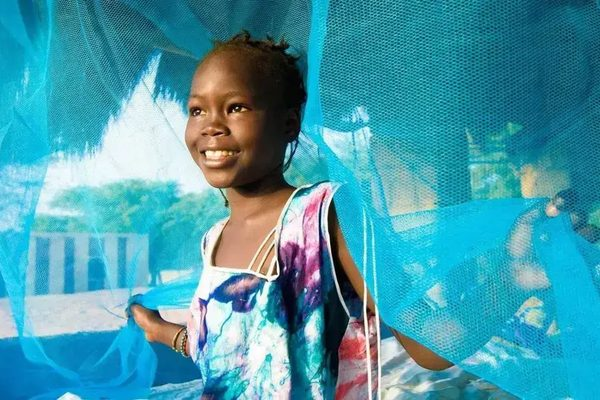
Mosquiteros financiados contra la malariaBed nets funded against malaria
Against Malaria Foundation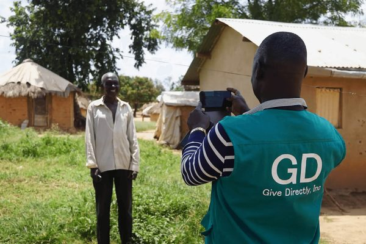
En transferencias directas a 2M+ personasIn cash transfers to 2M+ people
GiveDirectly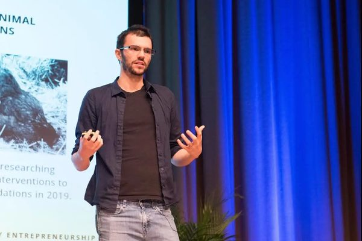
Organizaciones de alto impacto incubadas, sirviendo a 75M personasHigh-impact charities incubated, serving 75M people
Charity Entrepreneurship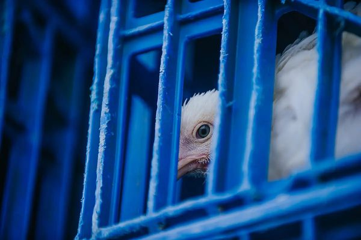
Compromisos corporativos libres de jaulas en 72 paísesCorporate cage-free commitments across 72 countries
Open Wing AllianceVoluntarios para ensayos clínicos aceleradosVolunteers for accelerated clinical trials
1Day Sooner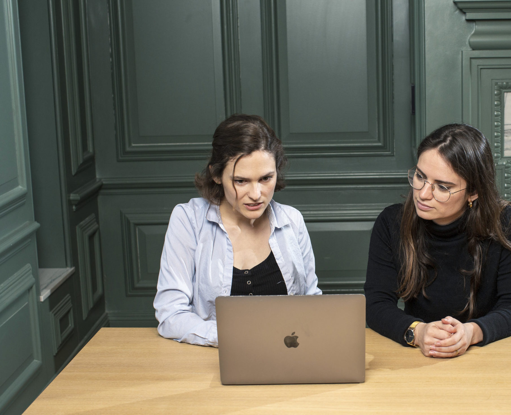
Cambios de carrera hacia trabajos de alto impactoCareer changes toward high-impact work
80,000 HoursImpacto en Colombia Impact in Colombia
Organizaciones de altruismo eficaz y aliadas que están generando cambios concretos en Colombia. Effective altruism and aligned organizations driving concrete change in Colombia.
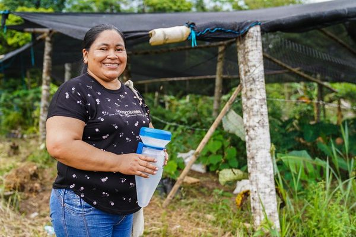
Hogares beneficiados por la expansión de Ingreso Solidario: la apertura de cuentas bancarias aumentó 14 puntos porcentuales. Expansión aprobada por el Congreso con base en evidencia generada por IPA.Households benefited by the Ingreso Solidario expansion: bank account ownership increased by 14 percentage points. Expansion approved by Congress based on evidence generated by IPA.
IPA Colombia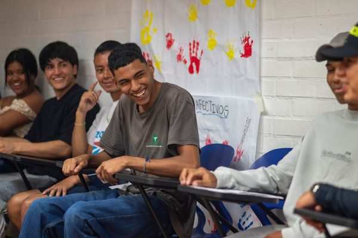
La tasa de homicidios en Colombia supera 4 veces el promedio mundial. ACTRA es la primera organización en escalar terapia cognitivo-conductual para prevención del crimen en América Latina.Colombia's homicide rate is 4x the global average. ACTRA is the first organization to scale cognitive behavioral therapy for crime prevention in Latin America.
ACTRA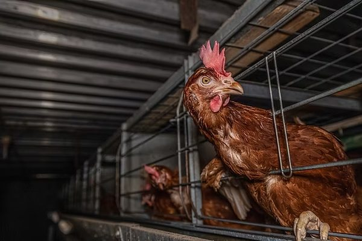
Compromisos de huevos libres de jaula conseguidos con Crepes & Waffles y Alimentos Colomer, dos de los operadores de alimentos más grandes de Colombia.Cage-free egg commitments secured from Crepes & Waffles and Alimentos Colomer, two of Colombia's largest food service operators.
Sinergia Animal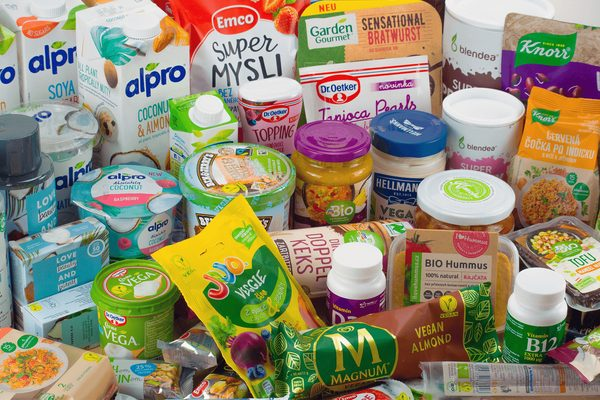
Empresas licenciadas con V-Label: única autoridad de certificación vegana en Colombia y representante oficial en 4 países más de América Latina, desde 2013.Companies licensed with V-Label: the only vegan certification authority in Colombia and official representative in 4 other Latin American countries, since 2013.
Fundación Veg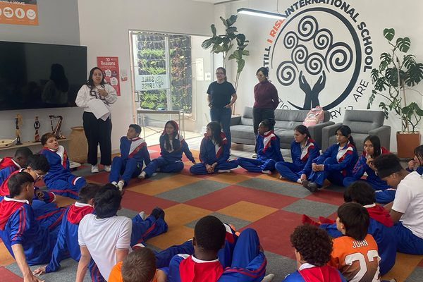
Primera organización en llevar una intervención de salud mental basada en evidencia a colegios públicos colombianos mediante docentes, respaldada por la ley que exige bienestar emocional escolar (2026).First organization to bring an evidence-based mental health intervention to Colombian public schools via teachers, backed by the 2026 law mandating school emotional wellbeing.
GRANA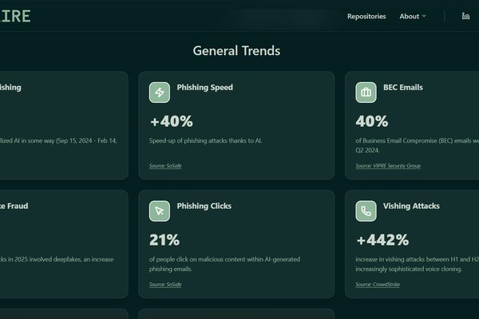
Asesoró a Colombia, España, Chile y Costa Rica en la implementación del Marco de la OCDE para la gestión de riesgos críticos emergentes.Advised Colombia, Spain, Chile, and Costa Rica on implementing the OECD Framework for Managing Emerging Critical Risks.
ORCGEncuentra formas de ayudar Find ways to help
Hay muchas formas de actuar: donaciones, carrera profesional, voluntariado y más. There are many ways to take action: donations, career choices, volunteering, and more.
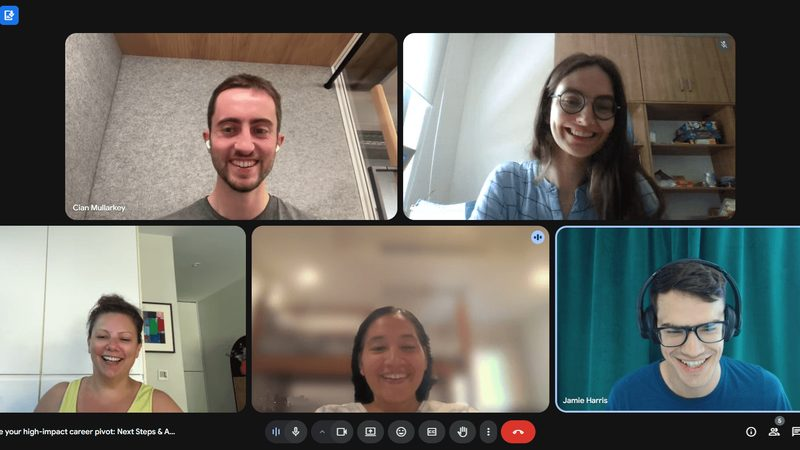
Toma un curso gratuitoTake a free online course
Un programa de 8 semanas que explora las ideas centrales del altruismo eficaz con una comunidad global.An 8-week program exploring the core ideas of effective altruism with a global community.
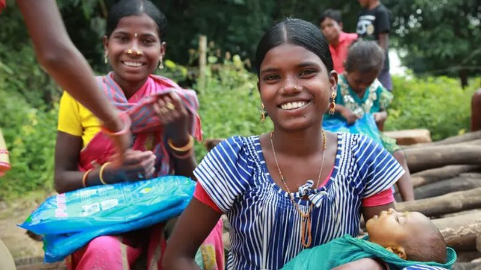
Dona a organizaciones efectivasDonate to effective charities
Haz que tu donación llegue más lejos eligiendo las organizaciones de mayor impacto comprobado.Make your donation go further by choosing charities with the highest proven impact.
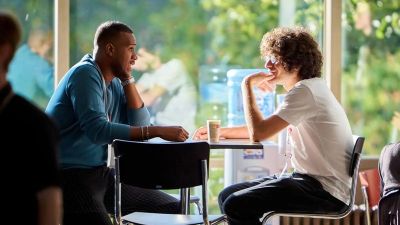
Obtén orientación de carreraGet career guidance
Pasarás 80.000 horas en tu carrera. Es una de tus mejores oportunidades para generar impacto.You'll spend 80,000 hours on your career. It's one of your best opportunities for impact.
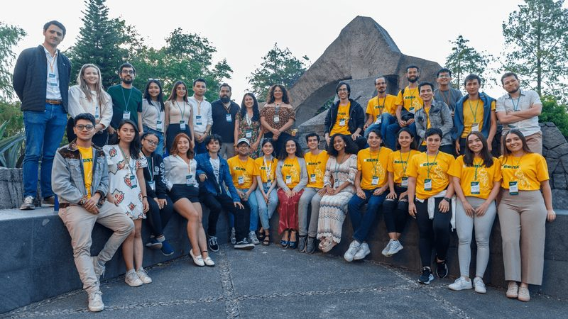
Únete a Altruismo Eficaz BogotáJoin Effective Altruism Bogotá
Conecta con profesionales en Bogotá comprometidos con el impacto basado en evidencia.Connect with professionals in Bogotá committed to evidence-based impact.
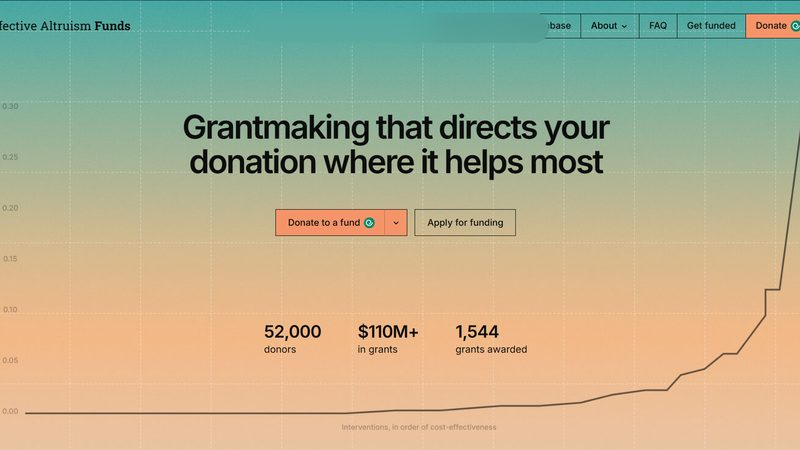
Busca financiación para un proyecto de alto impactoSeek funding for a high-impact project
EA Funds ha otorgado más de 1.500 subvenciones para proyectos de alto impacto en todo el mundo.EA Funds has awarded over 1,500 grants for high-impact projects around the world.
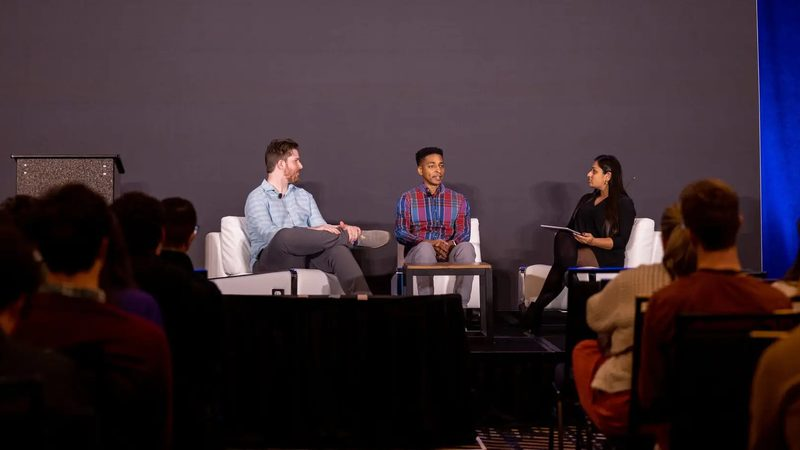
Asiste a una conferenciaAttend a conference
EA Global y EAGx reúnen expertos y oportunidades para aprender más y avanzar tu carrera.EA Global and EAGx feature experts and opportunities to learn more and advance your career.
«No es fácil escapar de la pobreza, pero un sentido de posibilidad y un poco de ayuda bien dirigida pueden a veces tener efectos sorprendentemente grandes.» "It is not easy to escape from poverty, but a sense of possibility and a little bit of well-targeted help can sometimes have surprisingly large effects."Prof. Abhijit Banerjee, Premio Nobel de Economía 2019Nobel Laureate in Economics 2019